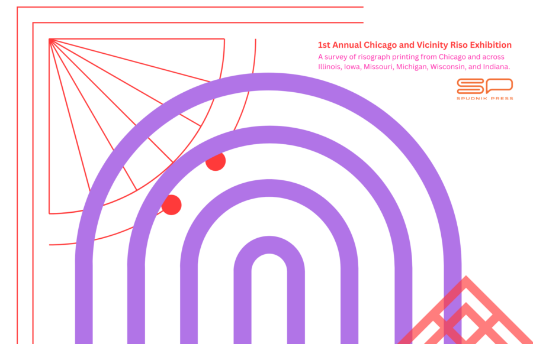

First Annual Chicago and Vicinity Riso Exhibition
May 3-July 4, 2026
Reception: Sunday, May 3, 2–5pm
The Chicago and Vicinity Riso Biennial is a regional exhibition celebrating risograph printing as it is being made right now across the Midwest. The show brings together artists from Chicago and Illinois along with the surrounding states — Iowa, Missouri, Michigan, Wisconsin, and Indiana — working in a medium defined by experimentation, accessibility, and the particular beauty of ink on paper.
Risograph printing occupies a unique space — rooted in zine culture and independent publishing, but increasingly embraced by artists pushing at the edges of what the process can do. Its layered spot colors, soy-based inks, and analog unpredictability make it a medium that rewards curiosity and collaboration.
This biennial is both a survey and a celebration, and a cheeky nod to the Art Institute of Chicago’s now defunct Chicago and Vicinity exhibition. This show is a chance to bring Midwest riso work into conversation with itself and honor a tradition of showing regional art, grounded in the independent, artist-driven print culture of the Midwest.
Work By: Abby Rodriguez, Aiden Workman, AiLinh Nguyen, Alec Espínola, Alex Cox, Alex Hohnsen, Ally Maurer, Ana Burgoon, April Behnke, Arianna Unabia Aquino, Ava Tankersley, Avery Johnson, AWE Society Press , BEVERLY FRESH, Brendan Page, Cassian Blashka, Cassidy Kulhanek, Cedar Heffelfinger, Celia Shaheen, Charlie Yellow,Connor Frew, Conor Stechschulte, Daniel Mellis, David Arnevik, David Nasca, Echo Elise Gonzalez, Elena Hsuanyi Whitwam, Ellie Pritts, Emma Brooks, Gabriel Howell, Gwen Schilling, Hannah Sellers, Hardscrabble Cafe, Hazel Vernon, Hui-min Tsen, ignafruit, Igor Arume, Imara Sanchez Rivera, Isabella Tsanov, Jaidyn Smith, Jaiya Everett, Jamie Weinfurter, Janet Lee, Jasjyot Singh Hans, Jason Dunda, Johnny Willems, Junior Pacheco, Kacie Lees, Katie Edwards, Katon Black, Kristin Z, Kristina Swarner, LA LUZ, Liana Fu, Lily (Basil) Maclachlan, Louisa Zheng, Luke Daly, Maco Soto, Madai Huerta, Marian Rosado, Marjorie Hellyer, Marlene Schwier, Martin Melto, Marylu E. Herrera, Matt DeLoughery, Meg Duguid, Modius Modi (Michael King Jr.), Nathan Olsen, Nicholas Waguespack, Omnia Sol, Patricia Swanson, Patti Swanson, Pearl Lomax, Philip Bell, Rachel Delmotte, Ramon Santos, Rashad Madison, Riesling Dong, Riley Hannon, Ryan Davis, Saffie Miles, Sam Grenier, Sara Varon, Sarah Anderson, Saumitra Chandratreya, Sean Mac, Sierra Kruse, Sophia Malone, Taj Richardson, Ümlaut Press, Victoria Granacki, Will Arnold, Yan Wang, Yukun Chloe Ba, and ZACHATTACK
This exhibition is a part of a summer of midwest riso exhibitions organized by Spudnik Press. A sister exhibition, 1st International Milwaukee Riso Invitational, is curated by Duncan MacKenzie, Ryan Peter Miller, and Christopher Sperandio. will be taking place at Spudnik Press: 1821 W Hubbard St, #302, Chicago, IL 60622 from June 26-August 14, 2026 (opening June 26, 6-8pm)